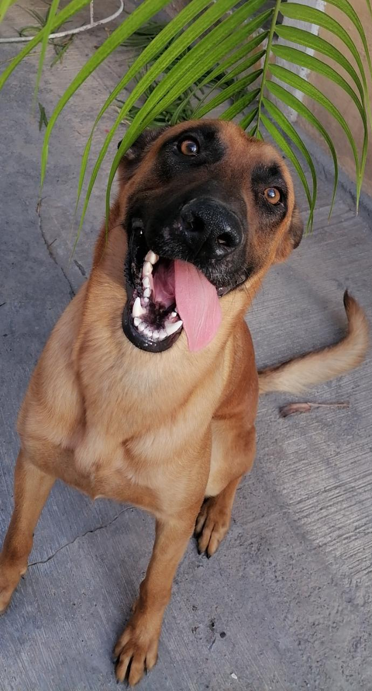

Música
Uno de mis pasatiempos favoritos es escuchar todo tipo de música pero más las que me relajan y en ocasiones me ayuda a concentrarme.

Películas y series
En mis tiempos libres me gusta ver películas y series, sin duda mi género favorito son de zombies o de suspenso.

Entrenamiento
El único deporte que me gusta es el box, entreno en mi casa por lo tanto mi papá me ayuda, aunque no sé por completo todo lo que conlleva el deporte, me relaja y me hace sentir mejor.

Mascota
Él es mi mascota Rocky es un Pastor Belga Malinois tiene 1 año y lo adopté hace 9 meses, es el perro más travieso que he tenido, muy jugeton, nunca hace caso pero es muy cariñoso conmigo y siempre me esta cuidando.
